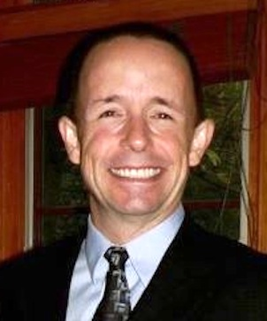

<div id="content" class="home">
	<div id="content-left-full">
		<div class="fancy page-title">Speakers</div>
		<p>
			This represents the complete list of speakers.
			If you would like to provide a more casual talk or lightning talk,
			<a href="mailto:cmhcodecamp@gmail.com">contact us</a>
			for more information.
		</p>
		
		<p>
			Here is the link to the
			<a href="http://bit.ly/CCC-preso">speaker signup page</a>
		</p>

		<div class="bio">
			<h2 class="fancy">Guy Royse (Keynote)</h2> 
			<p>
				
Guy works for Pillar Technology in Columbus, Ohio as an instructor, a consultant, and a software engineer. 
He has programmed in numerous languages but has more recently been working with Ruby and JavaScript.
He is also the chief organizer for the Columbus JavaScript User Group and is active in the local development community.
In his personal life, Guy is a hard-boiled geek interested in role-playing games, science fiction, and technology.
He also has a slightly less geeky interest in history and linguistics.
In his spare time he volunteers as Cubmaster for his kids' Cub Scout Pack.
			</p>
			<div style="clear:both"></div>
		</div>

		<div class="bio">
			<h2 class="fancy">Dominic Barreca</h2> 
			<p>
			In 1980 I recieved an Associates Degree in Electrical Engineering. I spent 12+ years in field calibration and servicing of process/temperature control systems. Later I worked for several years as Application/Sales Engineer for a distributor of industrial electrical controls.   For the past 12 years I have been the owner of Pulsar Controls, an independent Manufacturer's Representative for industrial electrical control products including Unitronics PLC/HMI All-in-One product line.
			</p>
			<div style="clear:both"></div>
		</div>

		<div class="bio">
			<h2 class="fancy">Raymond Chandler III</h2> 
			<p>
				Software developer in Columbus, OH and is the Founder of the SpkrBar.com site.
			</p>
			<div style="clear:both"></div>
		</div>

		<div class="bio">
			<h2 class="fancy">Raju Gandhi</h2> 
			<p>
				
				Raju Gandhi is a Java/Ruby developer and a programming language geek.
				He has been writing software for the better part of a decade in several
				industries including education, finance, construction and the manufacturing sector.
				Raju has a graduate degree in Industrial Engineering from Ohio University.
				In his spare time you will find Raju reading, or watching movies,
				or playing with yet another programming language.
				He is affectionately known as looselytyped on Twitter.
				</p>
			<div style="clear:both"></div>
		</div>

		<div class="bio">
			<h2 class="fancy">Jose Guay</h2> 
			<p>
			
			Jose has a BS in Computer Science and a masters degree in Finance and
			am a professional developer with more than 18 years of experience.
			I have worked as an Oracle developer and DBA before switching to the MS
			world and have been working with web apps since the time of classic ASP.
			I am an MCPD in ASP.NET 3.5/4.0, MCSD Web Applications and MCTS of SQL Server 2005.
			My native language is Spanish but I'm fluent in English and have learned some French.
			Jose is the author of two books: "Pro Telerik ASP.NET and Silverlight Controls" and "Beginning ASP.NET MVC 4".
			<div style="clear:both"></div>
		</div>

		<div class="bio">
			<h2 class="fancy">Stan Jonsson</h2> 
			<p>
			
			Stan is a Senior Consultant with QSI. He has been developing software for over 15 years, 
			both in the United States and Iceland. He has written and consumed more Web Services than he cares to admit and 
			tried to be a good boy and test his code. He is the proud father of three kids, a hobby magician and an avid cyclist.
			His signature celebratory move when completing a bike race is to air-type on a keyboard. His wife thinks it is dorky. You can follow him on www.sjonsson.com and @sjonsson.
			</p>
			<div style="clear:both"></div>
		</div>

		<div class="bio">
			<h2 class="fancy">Md Kahn</h2> 
			<p>
			
			As a web developer focusing on the front end, Md Kahn is addicted to JavaScript.
			Md spends much of his time writing "hello world" when someone tweets a new JavaScript library or JQuery plug-in.
			He doesn't stop there; rather, he spends his weekends converting "hello world" into a glorious "Todo app" so that
			he can update his linkedin profile with new frameworks and libraries.
			Md is a senior web developer at Nielsen in Chicago, IL.
			</p>
			<div style="clear:both"></div>
		</div>

		
		<div class="bio">
			<h2 class="fancy">Yiguang Hu</h2> 
			<p>
				
				Yiguang Hu has been a Java/Web Developer for over 15 years. He was a Sun Certified Java 2 Programmer and J2EE
				Web component developer. He has work for companies from start-ups to multinational corporations. 
				He has developed web applications on struts, JSF and grails. He uses groovy and grails to handle 
				most small chores like quick prototyping and data manipulations. In his spare time, if he is not
				with children, he is most likely reading or writing something for web or mobiles. He published a few mobile applications.
			</p>
			<div style="clear:both"></div>
		</div>

		<div class="bio">
			<h2 class="fancy">Jacob Mather</h2> 
			<p>
			
			Jacob Mather is a software engineer with over ten years of experience building dynamic content for
			the web. He is co-organizer of the San Francisco PHP User Group, and blogs at http://jmather.com/
			</p>
			<div style="clear:both"></div>
		</div>

		<div class="bio">
			<h2 class="fancy">Dan Saks</h2> 
			<p>
				
				Dan Saks is the president of Saks & Associates, which offers training
				and consulting in C and C++ and their use in developing embedded
				systems.  Dan writes the Programming Pointers column for Embedded.com
				online.  He has written columns for several other publications
				including The C/C++ Users Journal, The C++ Report, Embedded Systems
				Design, and Software Development.  With Thomas Plum, he wrote C++
				Programming Guidelines, which won a Computer Language Magazine
				Productivity Award as one of the best books of 1992.  Dan served as
				secretary of the ANSI and ISO C++ Standards committees and as a member
				of the ANSI C Standards committee.  More recently, he contributed to
				the CERT Secure C Coding Standard and the CERT Secure C++ Coding
				Standard.  He is also a Microsoft MVP (Most Valuable Professional).
			</p>
			<div style="clear:both"></div>
		</div>

		<div class="bio">
			<h2 class="fancy">Keith Wedinger</h2> 
			<p>
				
				Keith is a Solutions Architect with Leading EDJE.
				He has over 24 years experience designing, developing, and delivering high quality software solutions
				for several companies including Lexmark, Diebold, Limited Brands, Sterling Commerce, and IBM.
				He recently completed a PhoneGap / web technology based Android mobile app solution to help automate the workflow
				for his client's 1200 service technicians.  He is currently working on helping his current client
				re-architect their menu based system to support thousands of remote locations.
			</p>
			<div style="clear:both"></div>
		</div>

		<div class="bio">
			<h2 class="fancy">Matt Williams</h2> 
			<p>
				
				Matt Williams lives in a house filled with Computers, Cats and Fiber.  He spends his time with his daughter, hacking ruby and cloud experiments and weaving.
			</p>
			<div style="clear:both"></div>
		</div>

	</div><!--content-left-full-->
</div><!--content-->